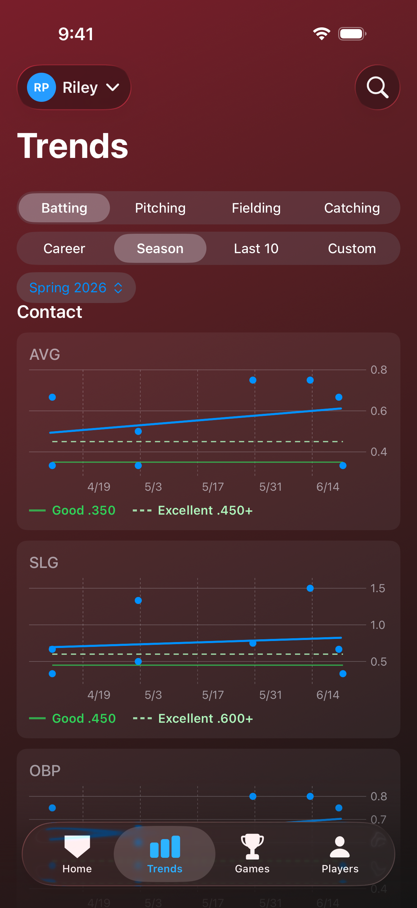
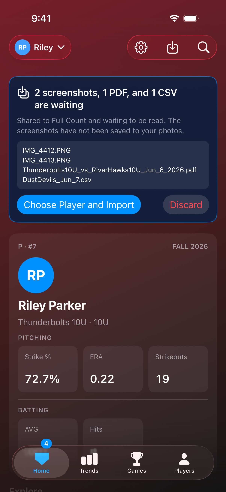
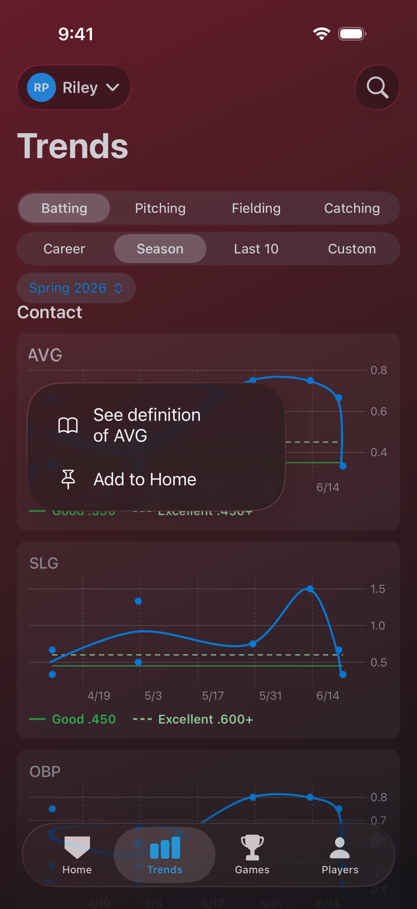
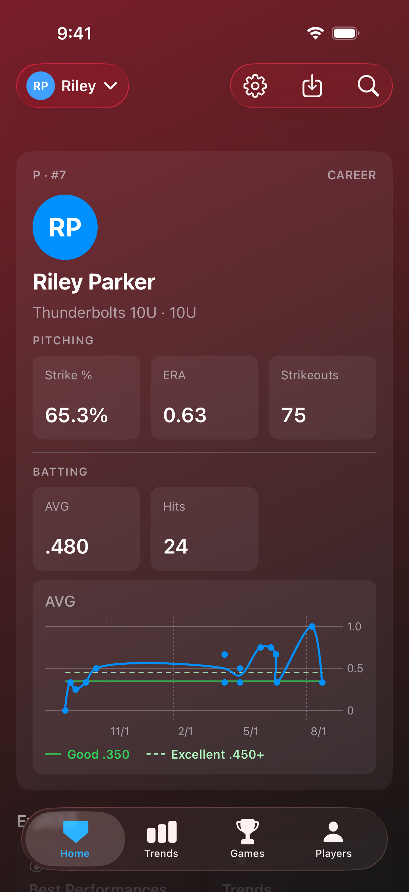

See progress take shape
Full Count transforms your game exports into trend charts showing development over time.
View trends in batting, pitching, catching and fielding across the full career history. You'll see strike percentage, WHIP, ERA, run support, strikeouts and walks per inning on the pitching side. Trends at the plate show batting average, on-base percentage, slugging and OPS. For fielding you'll see fielding percentage, errors and chances. Catching trends show caught-stealing rate, passed balls, innings caught and steals allowed.
Graph any trend over the full career, a single season, the last ten games, or any date range you choose.
A Season Summary shows a single-point average for each stat, season over season.


Showcase your standout games
Full Count sifts through the data to deduce your best performances, so a career day is never buried under a season of ordinary box scores.
At the plate, that means a home run game, three or more hits, a perfect day with a hit in every at bat, and hitting for the cycle (a single, double, triple and home run in one game). On the mound or in the circle, it means a no-hit or perfect outing. In the field, a triple play, a double play, or an errorless game. Behind the plate, a pickoff, two runners thrown out stealing, or a clean game with no passed balls.
Best Performances gathers them on one screen, across the whole career.

Stay competitive with performance targets
Full Count annotates stat trend charts with performance targets for your player's age division, 8U through 18U.
Charts show targets for Good and Excellent levels of performance. Full Count shows performance targets for strike percentage, ERA, WHIP, strikeouts and walks per inning, batting average, on-base percentage, slugging, OPS and plate discipline, along with fielding percentage and caught-stealing rate.
Performance targets are graphed true to their age division for the season, so career timelines show the progressing level of competition as performance targets jump. Since no league publishes performance targets, these tiers are not scientific, but reflect coaching consensus rooted in wide public discourse.

Easy import from GameChanger
Importing a game into Full Count is simple. Send the game stats as a CSV export or box score and choose your player. Full Count will read your team, season, opponent, final score and your player's stats. It appears immediately in Home, Games, Trends, Season Summary and Best Performances.
There are several ways to get your stats from GameChanger. If you hold Team Staff access, you can export games in CSV or PDF format. A CSV export is the richest data set, including fielding and catching statistics. The box score PDF includes batting and pitching stats. A CSV does not carry the game's date or opponent, so Full Count asks for those two. If the game's box score is already in, Full Count recognizes the game by its lineup and adds the fielding and catching stats to it.
Even without Team Staff access, you can import your box scores simply by taking screenshots of the game. Full Count will stitch the screenshots together, read the stats, and import them just like a full box score PDF. When importing screenshots, Full Count double checks team totals and alerts you when it's possible that a stat was entered incorrectly for your player, so you can correct the record.
No GameChanger? No problem. Enter the game directly into Full Count by hand.

Expedite imports with shared storage and ZIP files
Full Count supports importing directly from cloud storage such as Google Drive and Dropbox, so a single Team Staff member can easily share games with the whole team. We recommend sharing the CSV exports for each game, since they carry the richest data set.
Combine your games into a single ZIP file for expedited import. No need to organize. You can batch CSV, PDF and screenshots all into the same ZIP file. Full Count asks a few details about the first game import, then handles the rest on its own. CSVs are the exception: each import asks for its date and opponent, since GameChanger doesn't provide this data in the export.


A stat view that is yours
Choose which stats land on your Home screen, and whether stat pages open on batting, pitching, fielding or catching first. A pitcher's family can see ERA and strike percentage front and center. A slugger's can lead with average and total bases. Fielding and catching tiles can be added too, and they appear once games have been imported from CSV exports.
Trend graphs can live on the Home screen too. Press and hold any chart or stat until a menu appears, then choose Add to Home. The graph stays on Home, under the batting, pitching, fielding or catching tiles it belongs with, and a press and hold takes it off again.
On the Games page, a filter narrows the list to the games where your player batted, pitched, fielded or caught. Long press any stat to read its definition. ERA, run support, strikeouts and walks are shown per inning, since youth games vary in length, and one setting switches them to per game at the length your league plays.


Family sharing through iCloud
Share a player once and every phone stays current. Imports appear on each family member's device automatically and notify you when someone adds a game. Access is granted per person: View Only for relatives who follow along, or Edit privileges for someone who imports games. Full Count requires no other accounts and doesn't share your data with any third party. Your player's data is stored on your device, in your own iCloud.
The first time you share a player, Full Count copies that player's records into the share, which can take a minute. A banner at the top shows the progress, and you can keep using the app while it works.